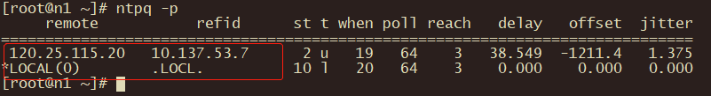

1. 配置NTP时间同步
配置时间同步需要有一台节点作为server，其他节点作为client去同步server的时间。
| 主机名 | 角色 |
|---|---|
| n1 | server |
| n2 | client |
| n3 | client |
1.1. 前提
配置时间同步之前要确保节点之间可以ping通。即已经完成配置hosts文件。
1.2. 安装
三台都要安装NTP。
yum install -y ntp
1.3. 配置
1.3.1. 先配置server
vim /etc/ntp.conf

启动ntp server，并查看状态。
# 启动
systemctl start ntpd
# 查看状态
systemctl status ntpd

验证是否成功启用同步。

设置开启自启。
systemctl enable ntpd
1.4. 再配置client
修改配置文件，将server作为client要同步的时间服务器。所有的client都要配置。
vim /etc/ntp.conf

启动NTP服务，并将NTP服务加入开机自启。
systemctl start ntpd
systemctl enable ntpd
查看是否成功开启同步。
ntpq -p